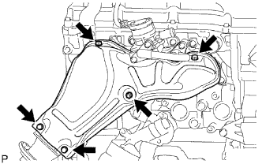

ПРОКЛАДКА ГОЛОВКИ БЛОКА ЦИЛИНДРОВ > СНЯТИЕ |
| 1. СНИМИТЕ ДВИГАТЕЛЬ В СБОРЕ |
Снимите двигатель в сборе (Нажмите здесь).
| 2. СНИМИТЕ ТЕПЛОЗАЩИТНЫЙ ЭКРАН ВЫПУСКНОГО КОЛЛЕКТОРА № 1 |
|  |
Выверните 5 болта и снимите теплозащитный экран выпускного коллектора № 1.
| 3. СНИМИТЕ ВПУСКНОЙ ПАТРУБОК № 4 |
 |
Отверните 4 гайки и снимите впускной трубопровод № 4 и 2 прокладки.
| 4. СНИМИТЕ КЛАПАН ПЕРЕКЛЮЧЕНИЯ ПОДАЧИ ВОЗДУХА В СБОРЕ |
 |
Отсоедините разъем.
Отверните 2 гайки и снимите клапан переключения подачи воздуха.
Снимите теплозащитный экран выпускного коллектора № 1.
| 5. СНИМИТЕ ВЫПУСКНОЙ КОЛЛЕКТОР |
Отверните 8 гаек и снимите выпускной коллектор.
Снимите прокладку.
| 6. СНИМИТЕ КРЫШКУ ЦЕПНОГО ПРИВОДА ГАЗОРАСПРЕДЕЛИТЕЛЬНОГО МЕХАНИЗМА В СБОРЕ |
Снимите крышку цепного привода газораспределительного механизма в сборе (Нажмите здесь).
| 7. УСТАНОВИТЕ ПОРШЕНЬ ЦИЛИНДРА №1 В ВМТ ТАКТА СЖАТИЯ |
 |
Временно установите болт ведущего колеса привода газораспределения.
Проверните коленчатый вал по часовой стрелке и совместите установочные метки на ведущем колесе привода газораспределения и зубчатых колесах распредвала, как показано на рисунке.
| *1 | Установочная метка |
| *2 | Ключ |
Снимите болт ведущего колеса привода газораспределения.
| 8. СНИМИТЕ НАПРАВЛЯЮЩУЮ ЦЕПНОГО ПРИВОДА ГАЗОРАСПРЕДЕЛИТЕЛЬНОГО МЕХАНИЗМА |
Выверните 2 болта и снимите направляющую цепного привода с кольцевым уплотнением.
| 9. СНИМИТЕ НАТЯЖИТЕЛЬ ЦЕПИ № 1 В СБОРЕ |
 |
Отведите стопорную пластину вверх, чтобы освободить фиксатор, и глубоко вдавите плунжер в натяжитель.
| *1 | Плунжер |
| *2 | Стопорная пластина |
Опустите стопорную пластину, чтобы ввести фиксатор в зацепление, и вставьте в отверстие стопорной пластины штифт диаметром 3,0 мм (0,118 дюйма).
Выверните болт, отверните гайку и снимите натяжитель цепи с прокладкой.
| 10. СНИМИТЕ БАШМАК НАТЯЖИТЕЛЯ ЦЕПИ |
Выверните болт и снимите башмак натяжителя.
| 11. СНИМИТЕ УСПОКОИТЕЛЬ ЦЕПИ № 1 |
Выверните 2 болта и снимите успокоитель цепи.
| 12. СНИМИТЕ ЦЕПЬ В СБОРЕ |
| 13. СНИМИТЕ КРЫШКУ ПОДШИПНИКА РАСПРЕДВАЛА |
 |
Равномерно ослабьте затяжку и выверните 21 болт крышек подшипников в последовательности, показанной на рисунке.
Снимите маслоподводящую трубку и кольцевое уплотнение с крышек подшипников.
Снимите 9 крышек подшипников.
| 14. СНИМИТЕ РАСПРЕДВАЛ |
 |
| 15. СНИМИТЕ РАСПРЕДВАЛ № 2 |
| 16. СНИМИТЕ РЫЧАГ ПРИВОДА КЛАПАНА № 1 В СБОРЕ |
Снимите 16 рычагов приводов клапанов с головки блока цилиндров.
| 17. СНИМИТЕ МЕХАНИЗМ РЕГУЛИРОВКИ ЗАЗОРА В ПРИВОДЕ КЛАПАНА В СБОРЕ |
Снимите 16 механизмов регулировки зазора в приводе клапана с головки блока цилиндров.
| 18. СНИМИТЕ КОЛПАК ШТОКА КЛАПАНА |
 |
Снимите чашки пружины клапана с головки блока цилиндров.
| 19. СНИМИТЕ ГОЛОВКУ БЛОКА ЦИЛИНДРОВ В СБОРЕ |
 |
Равномерно ослабьте 10 болтов в последовательности, показанной на рисунке. Выверните 10 болтов головки блока цилиндров и снимите плоские шайбы.
| 20. СНИМИТЕ ПРОКЛАДКУ ГОЛОВКИ БЛОКА ЦИЛИНДРОВ |
Снимите прокладку головки блока цилиндров с головки блока цилиндров.
| 21. ПРОВЕРЬТЕ УСТАНОВОЧНЫЙ БОЛТ ГОЛОВКИ БЛОКА ЦИЛИНДРОВ |
С помощью штангенциркуля измерьте диаметр самого удлиненного резьбового элемента в зоне измерения.
| *1 | Диапазон измерений |
| *2 | Расстояние |
| 22. ПРОВЕРЬТЕ ГОЛОВКУ БЛОКА ЦИЛИНДРОВ В СБОРЕ |
С помощью прецизионной поверочной линейки и щупа измерьте величину коробления поверхностей, контактирующих с блоком цилиндров и коллекторами.
| *a | С нижний стороны головки блока цилиндров |
| *b | Сторона впускного коллектора |
| *c | Со стороны выпускного коллектора |
Методом цветной дефектоскопии проверьте впускные каналы, выпускные каналы и поверхность головки блока цилиндров на наличие трещин.
При обнаружении трещин замените головку блока цилиндров.